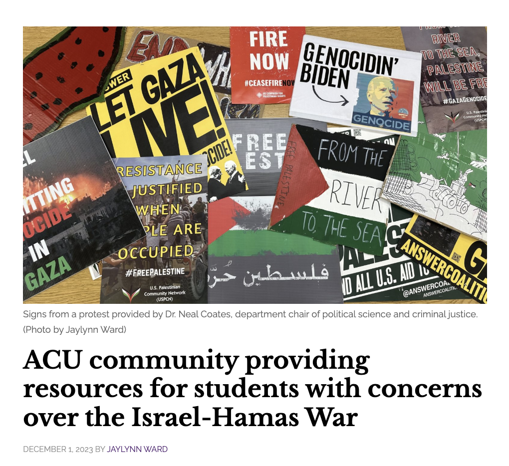
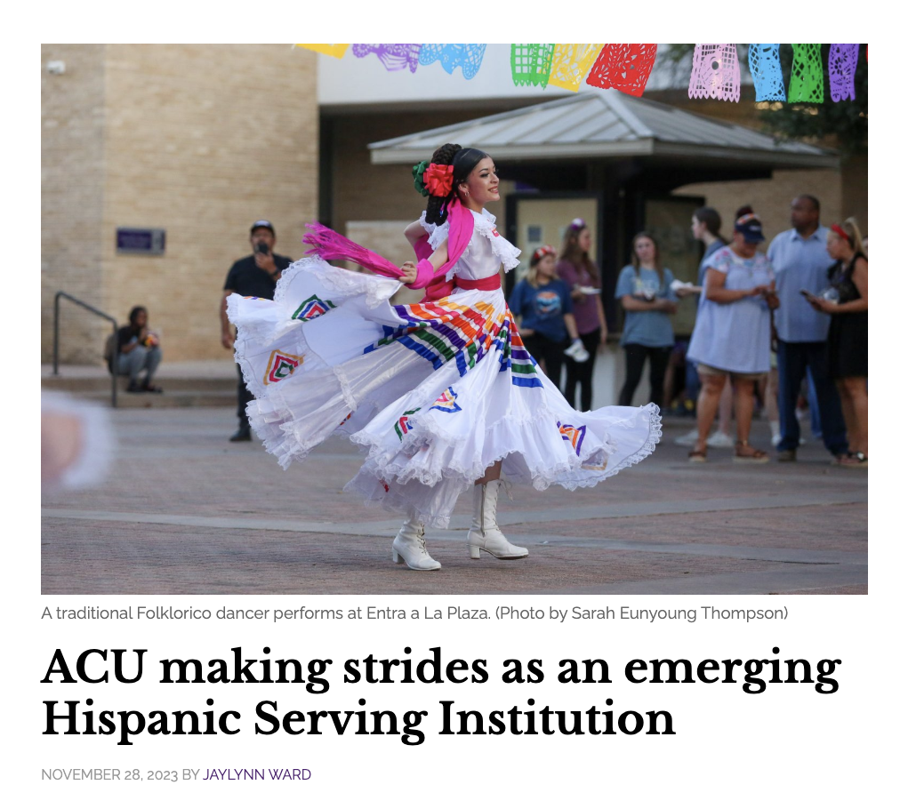
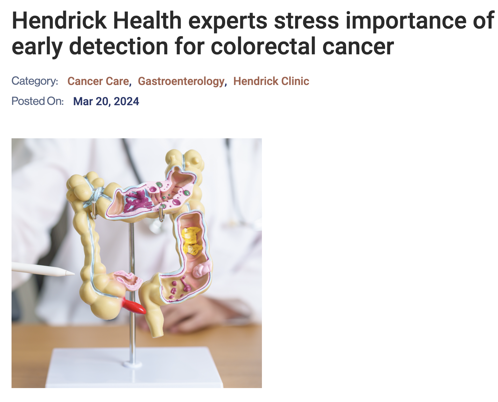
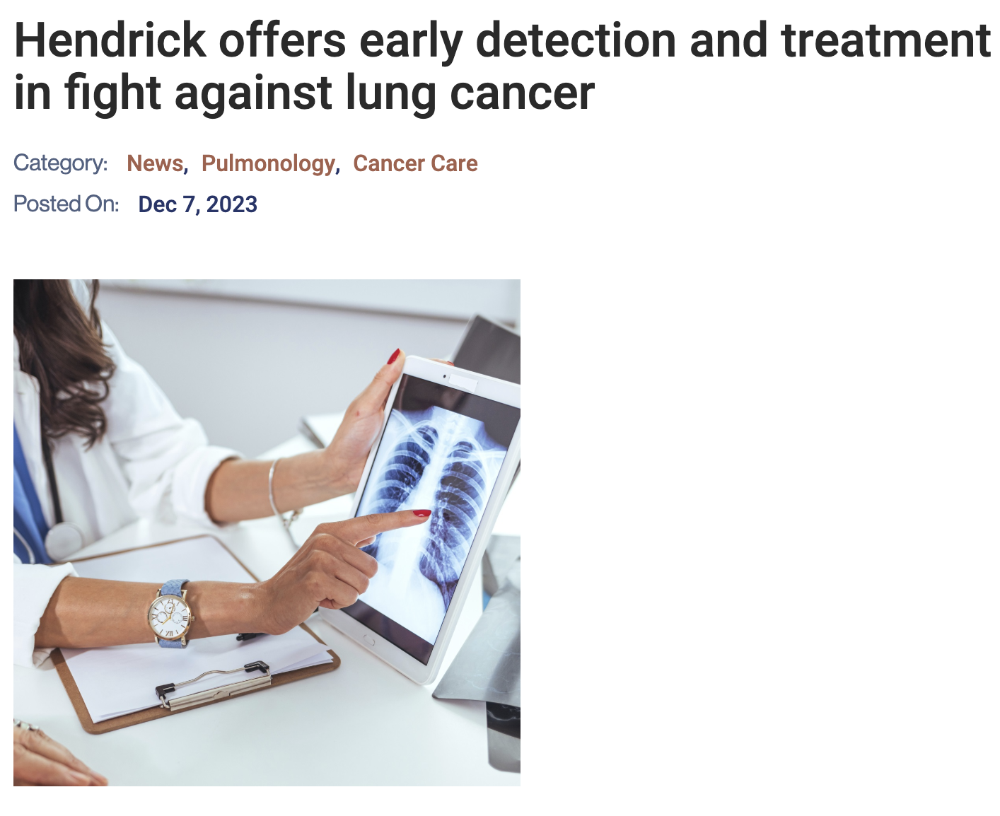

ACU Community Resources for Concerns Over Israel - Hamas War (from The Optimist)

Visit This Example
ACU Emerging as Hispanic Serving Institution (from The Optimist)

Visit This Example
Importance of Early Detection of Colorectal Cancer (from Hendrick Health)

Visit This Example
Early Detection and Treatment for Lung Cancer (from Hendrick Health)

Visit This Example